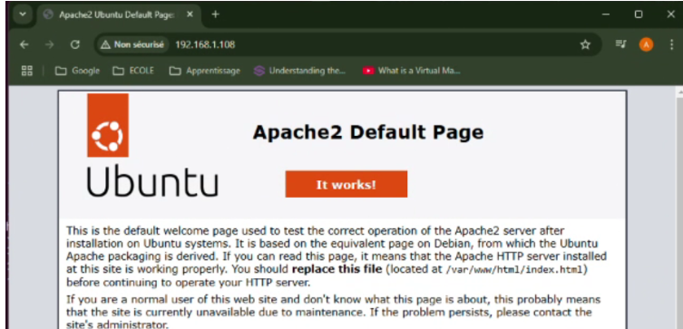
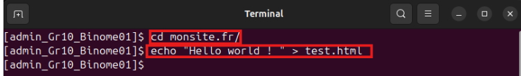
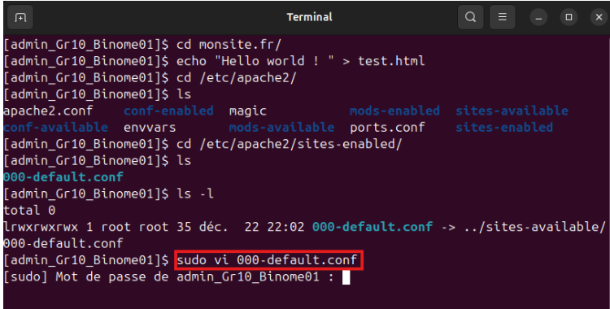
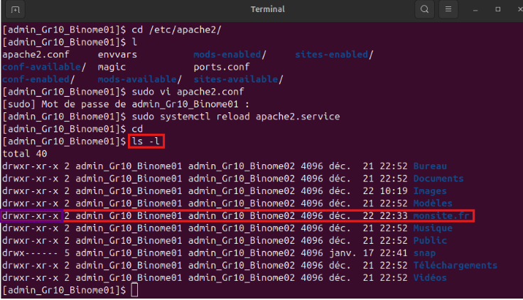
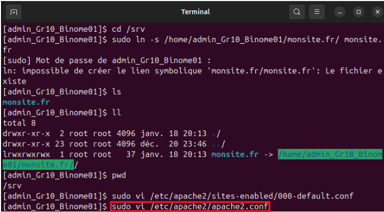

Installation et configuration d’un service web (Apache) :
Nous prenons connaissance de l’adresse ip de la machine : 192.168.1 correspond à l’adresse du réseau tandis que 108 correspond à l’adresse de la machine virtuelle.
 ">
">
Installer un serveur ssh si ce n’est pas déjà fait, “sudo apt install openssh-serve:” permet d’installer le service de ssh. Et entrer “O” ensuite pour continuer.
 ">
">
(optionnel -> facilite les manips)
 ">
">
On installe apache puis on entre “O” pour oui. Une fois l’installation terminée, le service web sera démarré dès la fin de l’installation.

Vous pourrez ensuite vérifier le bon fonctionnement de votre service web en tapant l’adresse ip de votre machine dans un navigateur.

On peut ainsi voir l’emplacement du fichier html. Sur le site, il est indiqué que le fichier est contenu dans le dossier var/www par défaut, il s’agit donc d’un fichier public.
D’après la commande ls, le fichier est bien dans le dossier var.

On peut taper la commande “more /var/www/html/index.html” pour voir le contenu du fichier index.html.

Avec ls -l, on constate que l’on n’a pas les droits d’écriture et de modifications sur le fichier index.html, on souhaite régler ce problème.

On crée un dossier monsite.fr dont l’on peut constater la création via la commande ll. (Ici, nous pouvons voir qu’elle affiche une erreur au niveau de la création du répertoire. Cela se produit car nous avons déjà créé au préalable le répertoire mais sinon le répertoire est censé se créer sans problème.)

On se place dans le répertoire courant (monsite.fr).
Puis on crée un fichier test.html dans lequel on écrit “Hello world ! “.
Cette manipulation permet de savoir si nous avons bien les droits d’écriture.

Le but va être d’avoir un affichage fonctionnel sur la page test.html (qui n’est pas le cas pour l’instant).

On peut voir que l’on retrouve le fichier 000-default.conf dans un lien en tapant la commande ls -l.
On modifie le fichier 000-default.conf avec sudo vi :

Il faut entrer le mot de passe pour y accéder.
Sur la ligne DocumentRoot, remplacer var/www/html par /home/nom_utilisateur/monsite.fr .
Puis faites echap/esc, cela vous ramènera en mode commande puis entrer la commande “:wq” pour enregistrer les modifications et quitter le mode insertion.

Après avoir modifié le DocumentRoot, il faut l’actualiser avec la commande sudo systemctl reload apache2.service.
Vous devriez ainsi avoir le texte ci-dessus sur le site.
On se place ensuite dans le dossier site-enabled en tant que répertoire courant
puis avec sudo ls on peut aller voir les fichiers d’apache2 (error.log qui nous intéresse plus particulièrement).
On peut consulter le fichier error.log avec la commande ci-dessus pour constater que l’on a des problèmes de permissions sur le fichier.
Il faut aller voir la configuration d’apache, et dans le dossier apache,
on affiche le fichier apache2.conf qu’ il va falloir consulter en tapant la commande sudo vi apache2.conf.
Et, ce fichier contient l’ensemble des directives qui permet à apache de travailler.
Il y a une directive sur le répertoire soit “Directory” en anglais. Cette directive nous indique que dans le fichier : / (Fichier racine) : Nous avons aucun accès (“Require all denied) /var/www/ : Nous avons accès (“Require all granted”), PS: Ce qui nous permettait d’avoir la page par défaut
Nous voulons avoir accès à /home/admin_Gr10_Binome01/monsite.fr/, alors, il faut copier la
directive /var/www/ puisque l’on a l’accès puis on modifie /var/www/ par admin_Gr10_Binome01
(pour notre cas) et on laisse les options par défaut. Puis, on enregistre.
(Une fois modifier, appuyer sur echap et vous enregistrer et quitter en tapant “:wq”).

On redémarre le système. On regarde si le site fonctionne:
Dans notre cas, on a cet affichage, ce qui veut dire que le problème n’est pas totalement réglé.
Comme, précédemment, il y'a écrit que dans le répertoire principal, nous n’avons pas les permissions, alors il faut faire en sorte de regarder les permissions qui sont sur le répertoire principal. Alors pour revenir dans le répertoire principale, on tape cd.

On tape la commande ls -l, pour voir l’ensemble des permissions.
On peut voir que les autres ont bien accès à la lecture et à l'exécution du fichier.
Sachant que nous avons l’ensemble des droits dans le fichier, le problème
ne vient donc pas de cet endroit mais certainement du répertoire parent.
Alors, pour aller vers le répertoire parent, soit le dossier home, on tape la commande cd .. .
On tape la commande ls -l, pour voir les permissions :
On peut voir que je n’ai pas d’accès. Alors, il faut faire en sorte d’avoir
les permissions manquantes dans le compte administrateur pour que l'affichage fonctionne bien.
Pour avoir des informations précises sur le dossier, on tape, tout d’abord,
la commande: ls -ld /home/afshar/ . Cette commande permet de montrer les permissions
en tant qu’utilisateur.
Ensuite, on tape la commande : sudo ls -ld /home/afshar/ . Cette commande permet de montrer les permissions pour le root.

Pour contourner certaines restrictions qui complexifie les tâches,
on passe en mode root avec la commande : sudo -i .
Ici, une fois en mode root, on tente de modifier les permissions et le propriétaire du dossier :
On change le propriétaire avec la commande : chown -R afshar:afshar /home/afshar .
On modifie les permissions avec la commande : chmod -R 777 /home/afshar .
Puis, on tape exit pour quitter le root.
On installe ACL en tapant la commande : sudo apt install acl . Les ACL (Access Control Lists)
peuvent restreindre l'accès, même si les permissions semblent correctes.

On vérifie ACL sur le répertoire en tapant la commande : getfacl /home/afshar .
Si des ACL restrictives sont définies, on les réinitialise en tapant la commande :
sudo setfacl -bR /home/afshar .
Certaines distributions Linux activent des politiques de sécurité avancées
qui pourraient bloquer l'accès. On vérifie d’abord si AppArmor est activé en tapant la commande :
sudo aa-status .
On peut voir qu’en exécutant cette commande, elle nous indique bien que AppArmor est activé.
Afin de tester l’affichage, on désactive temporairement AppArmor en tapant la commande : sudo systemctl stop apparmor .
Puis, on retape la commande ls -ld /home/afshar pour voir à nouveau les droits après les modifications.
Après modification, on peut bien voir que l’utilisateur possède tous les droits pour l’affichage.

Ainsi, voici l’affichage attendu après le changement.

Dans le système Ubuntu, il y a un dossier par défaut nommé /srv dont le but est
de pouvoir stocker les différents services. Donc, on y accède en tapant la commande cd /srv .

Ici, on fait un lien entre le dossier /srv et monsite.fr en tapant la commande :
sudo ln -s /home/admin_Gr_10_Binome01/monsite.fr/ monsite.fr

On regarde le contenu du dossier /srv.

En tapant la commande ll, on peut voir l’ensemble des informations du contenu du dossier /srv.
Ici, on peut notamment voir un lien symbolique monsite.fr qui pointe vers /home/admin_Gr_10_Binome01/monsite.fr/.
Ce lien est le lien que nous avons créer précédemment.

Ici, lorsque l’on tape la commande pwd, elle nous indique que nous sommes bien dans le répertoire /srv.
Nous on veut faire en sorte que monsite.fr s’affiche lors de la commande précedente.
Alors, on va modifier la configuration :

On tape la commande, sudo vi /etc/apache2/sites-enabled/000-default.conf .

On modifie /home/admin_Gr10_Binome01/monsite.fr par /srv/monsite.fr.

j;fgvbgjvb ngjjcgj;f;jyftufcut;ftu;fltuftyfvtyvfktyvfhvf,hjgt

Ici, on fait un lien entre le dossier /srv et monsite.fr en tapant la commande :
sudo ln -s /home/admin_Gr_10_Binome01/monsite.fr/ monsite.fr
On regarde le contenu du dossier /srv.
En tapant la commande ll, on peut voir l’ensemble des informations du contenu du dossier /srv.
Ici, on peut notamment voir un lien symbolique monsite.fr qui pointe vers /home/admin_Gr_10_Binome01/monsite.fr/.
Ce lien est le lien que nous avons créer précédemment.
Ici, lorsque l’on tape la commande pwd, elle nous indique que nous sommes bien dans le répertoire /srv.
Nous on veut faire en sorte que monsite.fr s’affiche lors de la commande précedente.
Alors, on va modifier la configuration :